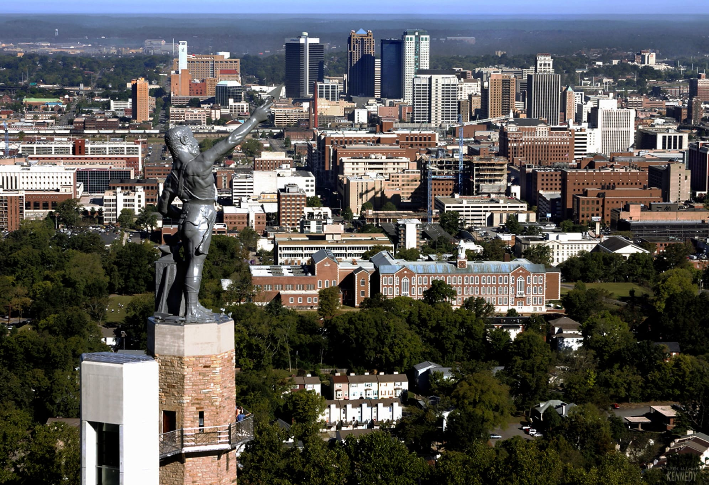

Birmingham
General Information
- Population: 194,156
- Incorporation Year: 1871
- Region: North Central
- City classification: Urban
- Income vs. State Average: $38,326 / $43,984
Birmingham, Alabama, often referred to as the "Magic City," was founded in 1871 by merging three communities and quickly grew into a central industrial hub in the state. [2, 3] This history as a steel and rail center gave the city its initial boom, which has since transformed into a dynamic urban center with a rich and complex identity. Today, Birmingham has incorporated an array of cultural attractions and entertainment options while maintaining its historical significance. The city has an estimated population of 194,156 residents following the 2020 state census, with an annual decrease of 0.64%. The city has an average income per person of $38,326 per year compared to the state average of $43,984 per year. [1]
The city's cultural heritage is deeply intertwined with its industrial past and its pivotal role in the American Civil Rights Movement. [3] The Birmingham Civil Rights District, a National Monument, includes the 16th Street Baptist Church and the Civil Rights Institute, offering powerful insights into the struggle for equality. [3] Beyond this profound history, Birmingham fosters a vibrant arts scene. The Birmingham Museum of Art features a globally diverse collection, and the city is home to the prestigious Alabama Ballet, one of only a handful of professional ballet companies in the South. [3, 4]
Birmingham provides many entertainment options catering to diverse interests. Music lovers can experience a show at the historic Alabama Theatre or the modern BJCC Arena, which hosts major concerts and sporting events. [3] The city's culinary scene is a major draw, earning national recognition and featuring numerous James Beard Award-winning restaurants in districts like Avondale and Lakeview. Sports enthusiasts can enjoy a variety of events, from college football at Protective Stadium to a round of golf on the world-renowned Robert Trent Jones Golf Trail at Oxmoor Valley. [3, 4]
Outdoor enthusiasts have ample opportunities for recreation in and around the city. Red Mountain Park, a large urban park located on a former mining site, offers extensive hiking and biking trails, a zip line, and an off-leash dog park. Ruffner Mountain Nature Preserve provides another natural oasis within the city limits, dedicated to conservation and environmental education. These parks offer a striking contrast to the city's industrial legacy, providing residents and visitors with beautiful green spaces to explore.
While there are no state parks within the immediate city limits, Oak Mountain State Park, the largest state park in Alabama, is located just a short drive south in Pelham. [4] This expansive park features a 10,000-acre landscape with a picturesque lake, hiking and mountain biking trails, golf course, and even a wildlife rehabilitation center. [4] Other nearby options include Tannehill Ironworks Historical State Park, which combines history with recreation. These state parks enhance Birmingham's appeal as a destination for outdoor adventure.